The Work
Bird taxidermy, sculpture, and film craft.
A qualified bird specialist since 2002, Carl works across taxidermy, hand-carved wood, cast pewter and bronze, resin castings, and prosthetic sculpture for film and advertising — with pieces held in museums and private collections around the world.
Taxidermy
Museum-standard bird taxidermy.
Twice winner of Best Professional Bird at the World Taxidermy Show, with work held by the National History Museum of California and in major European collections.
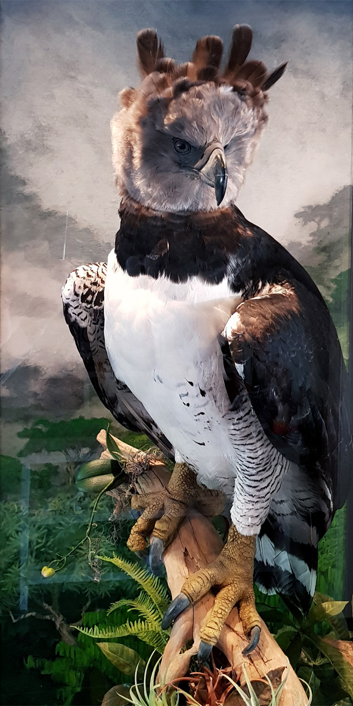
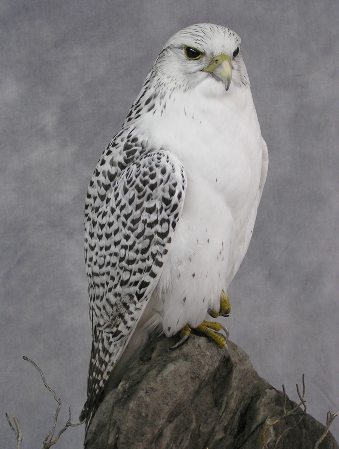
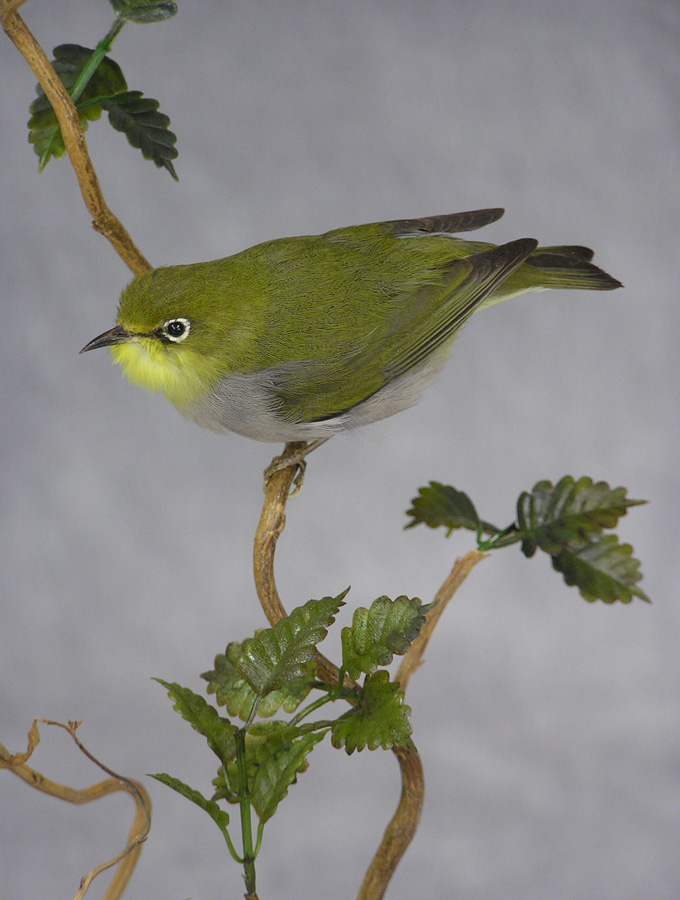

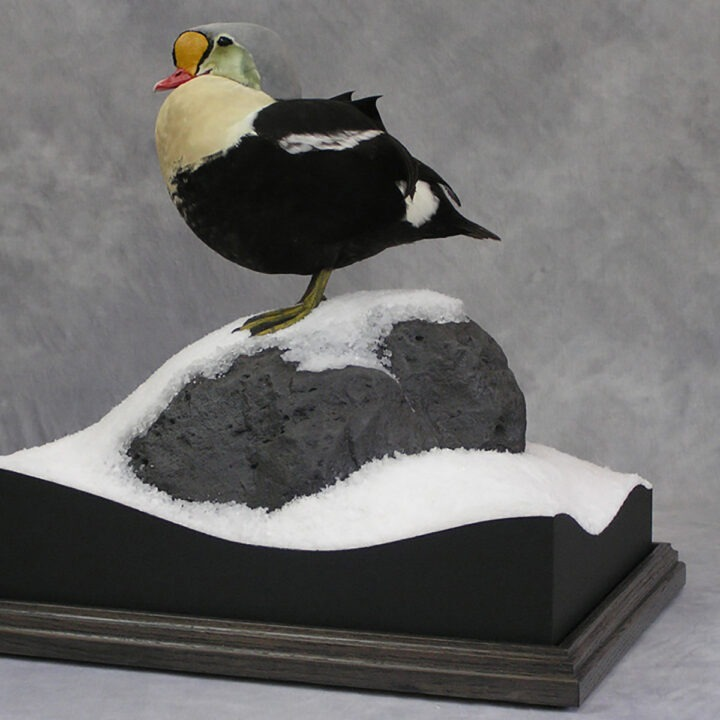

Sculpture
Wood, pewter, bronze & resin.
Hand-carved wooden sculptures from life-size pieces to small mixed-medium carvings, cast and moulded in resin and pewter — subjects ranging from equestrian to medieval and gothic forms.

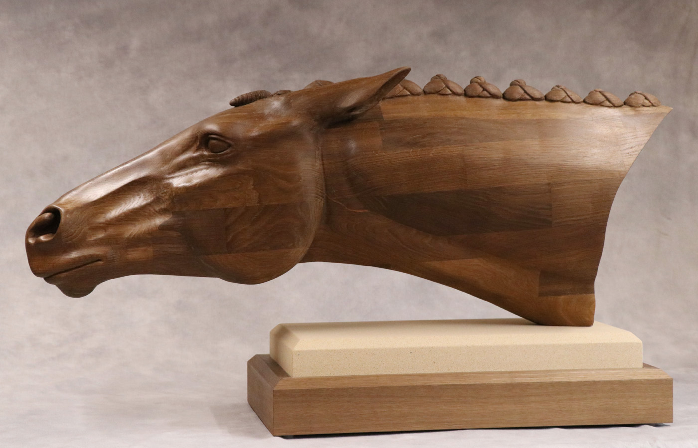

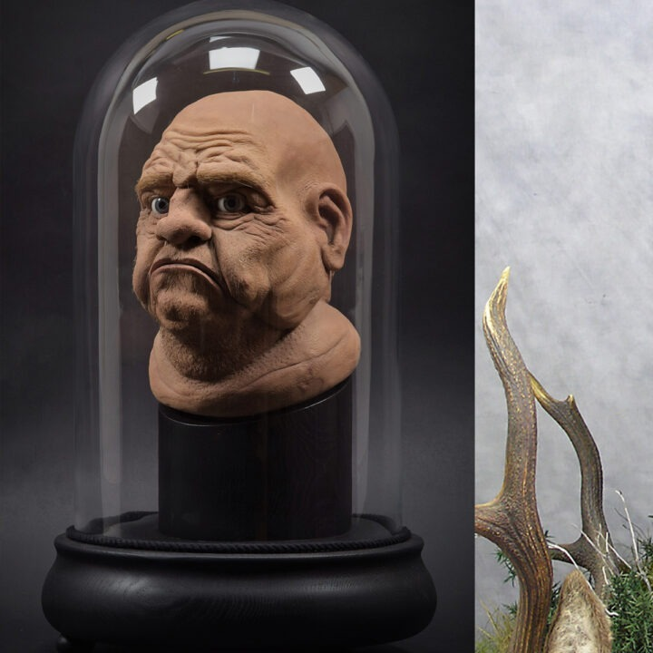
Film & special effects
Prosthetic sculpture for film and advertising.
Since 2008, Carl has sculpted special-effects pieces for the film industry and some of the UK's leading advertising agencies.
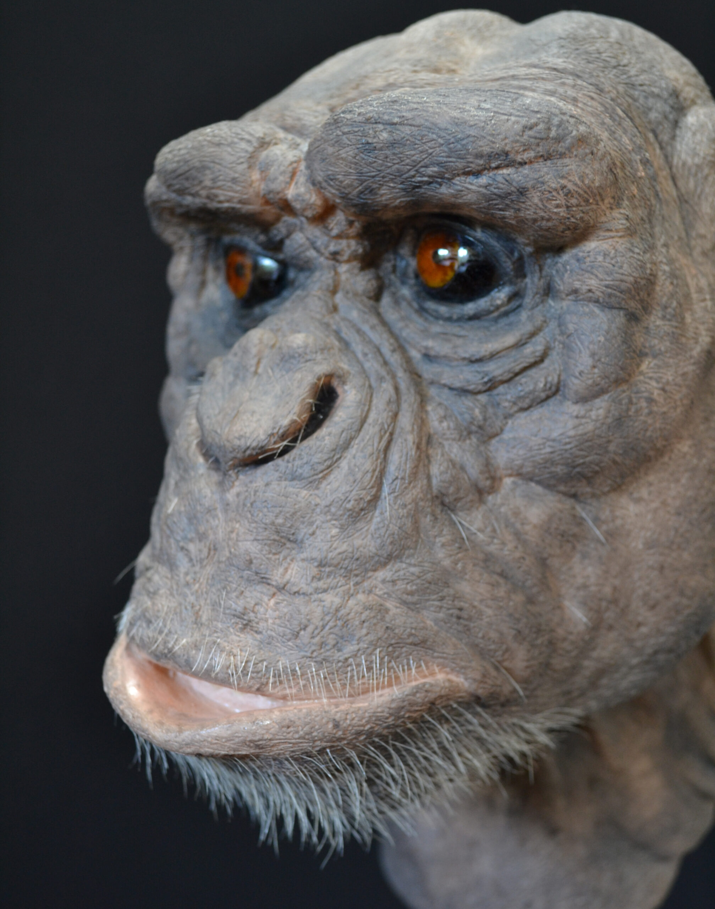
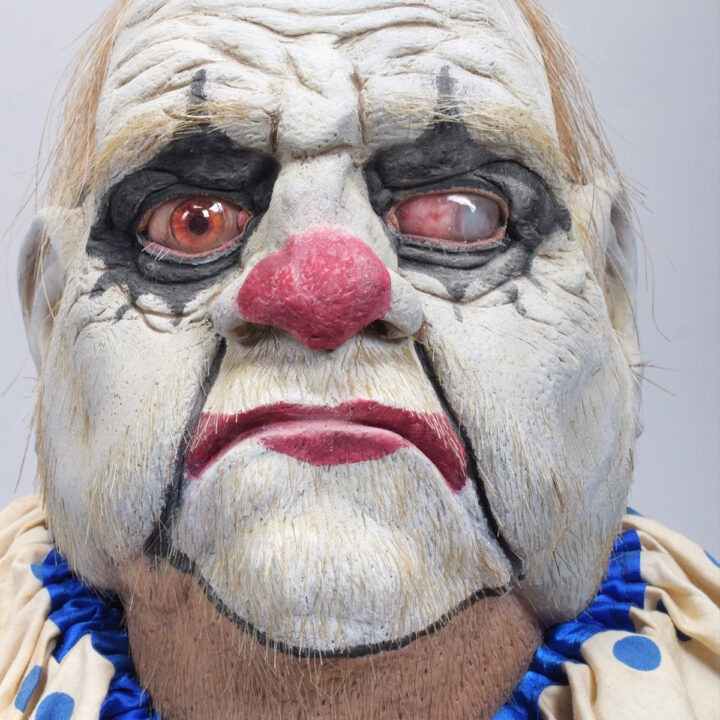
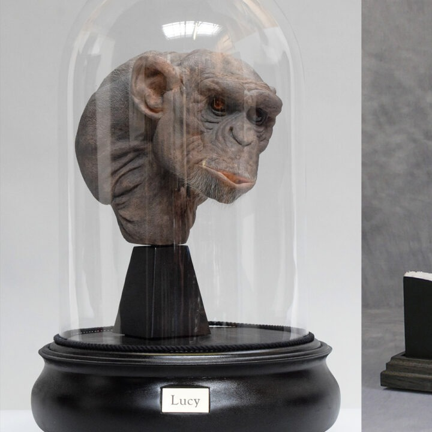
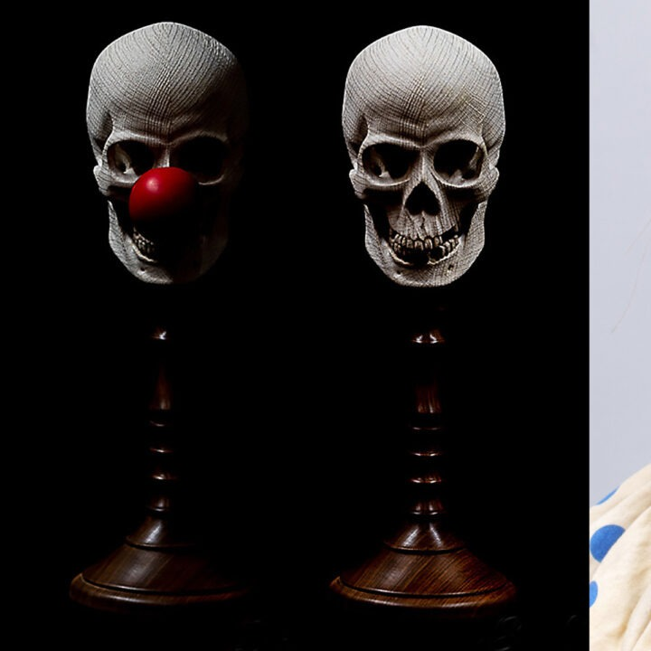
The Book
Bird Taxidermy: The Basic Manual
Published in 2013, Carl's manual has sold over 6,000 copies worldwide and remains one of the few modern bird taxidermy manuals available. It contains over 420 colour photographs with easy-to-follow instructions, and lists every tool and material needed to become a bird taxidermist.
Purchase on Amazon UK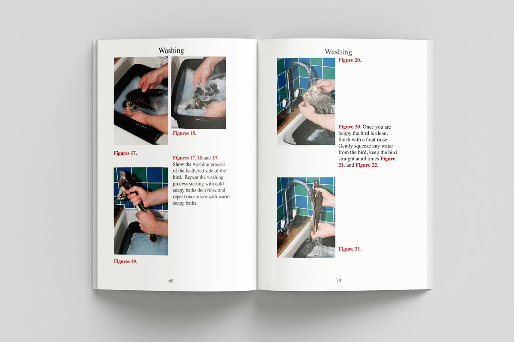
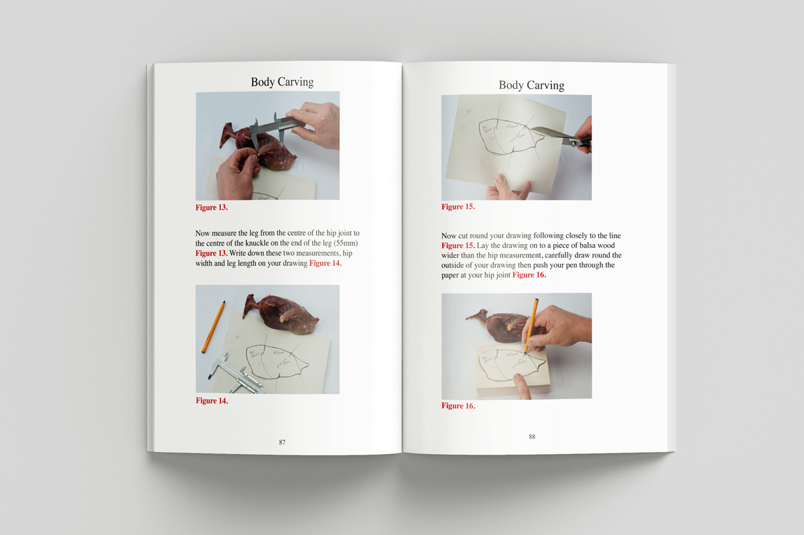
Have a piece in mind?
Whether it's taxidermy, a carved sculpture, or a cast piece — get in touch to discuss a commission.